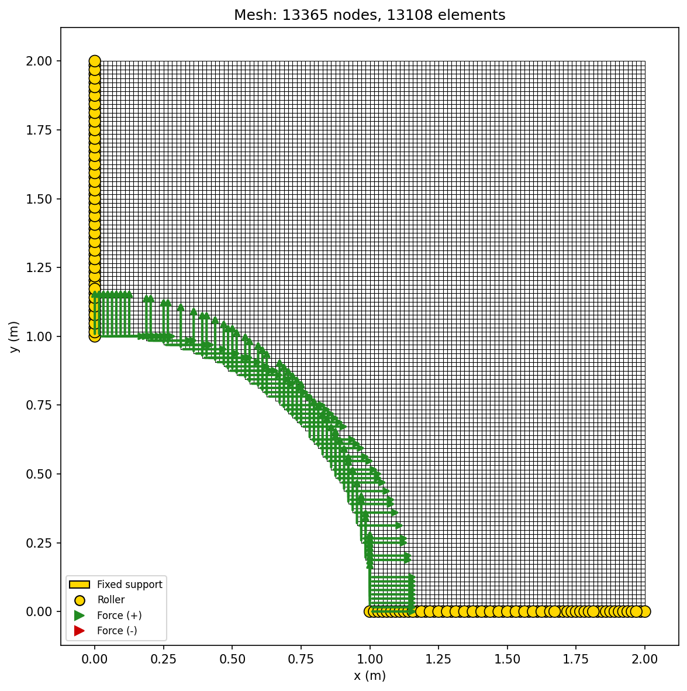
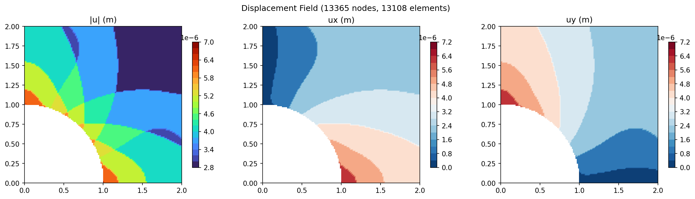
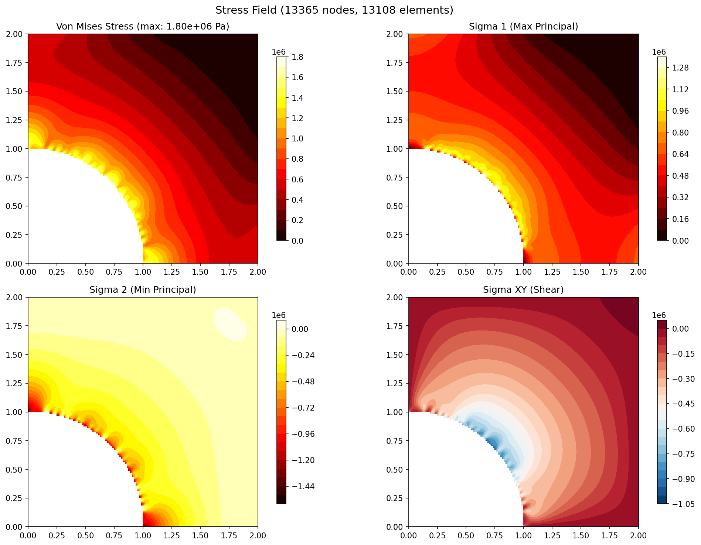
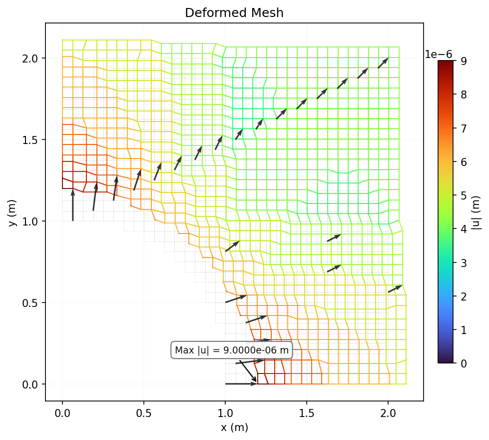
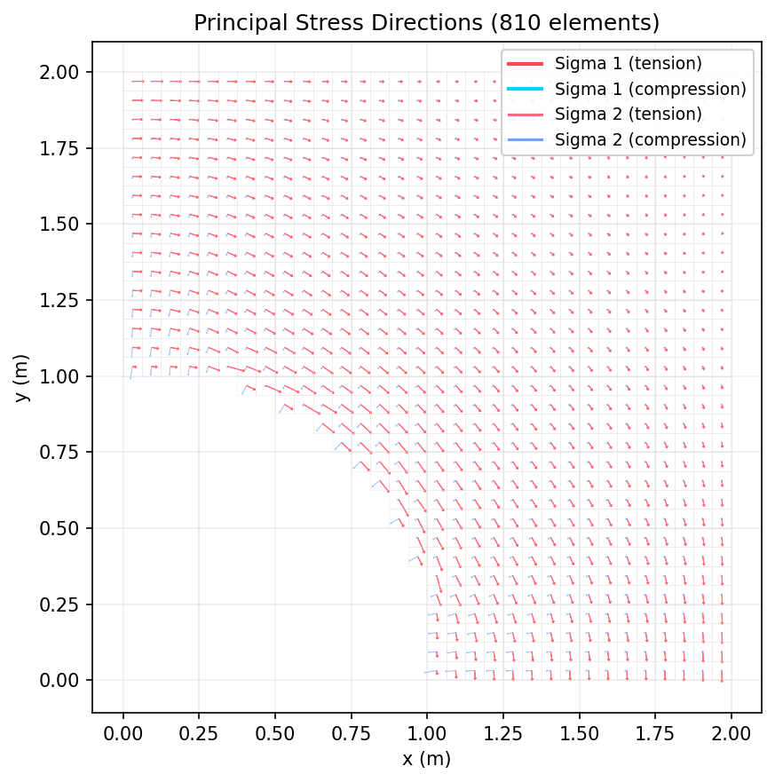

Thick Cylinder (Lame)
Annular cylinder under internal pressure and steady-state thermal gradient. Validates the thermal-structural coupling and plane strain formulation against the classical Lame solution for thick-walled cylinders.
Problem Setup
| Parameter | Value |
|---|---|
| Inner radius (a) | 1.0 m |
| Outer radius (b) | 2.0 m |
| Internal pressure (pi) | 1.0 MPa |
| Inner temperature (Tinner) | 100 C |
| Outer temperature (Touter) | 0 C |
| Young's modulus (E) | 200 GPa (steel) |
| Poisson's ratio (ν) | 0.3 |
| Thermal expansion (α) | 12e-6 /K |
Mesh Statistics
| Property | Value |
|---|---|
| Nodes | 875 |
| Elements | 810 |
| Element Type | Q4 (4-node bilinear quadrilateral) |
| DOFs | 1,750 |
| Material | E = 200 GPa, ν = 0.3, α = 12e-6 /K |
| Plane Assumption | Plane Strain (t = 0.01 m) |
| Solver | Cholesky (direct) |
| Solve Time | 1,930 ms |
Boundary Conditions
| Type | Location | DOF | Value |
|---|---|---|---|
| Symmetry | Left edge (x = 0) | ux | 0 |
| Symmetry | Bottom edge (y = 0) | uy | 0 |
| Pressure | Inner hole (r = a) | σrr | -1.0 MPa |
| Thermal | Through-thickness | T(r) | Tinner + (Touter - Tinner) ln(r/a) / ln(b/a) |
Results
Mesh Quality

Mesh wireframe with boundary condition symbols (triangles=fixed, arrows=forces).
Displacement Contour

Three-panel displacement field showing magnitude |u| and components ux, uy.
Stress Contour

Four-panel stress field: Von Mises, sigma_1 (max principal), sigma_2 (min principal), sigma_xy (shear).
Deformed Mesh

Deformed mesh (cyan) overlaid on original (gray dashed) with displacement vectors and thermal expansion.
Principal Stress Directions

Arrow plot showing sigma_1 (red=tension, blue=compression) and sigma_2 directions at element centroids.
Validation
Lame solution (plane strain, internal pressure only):
$$\sigma_r(r=a) = -p_i = -1.0 \text{ MPa}$$
$$\sigma_\theta(r=a) = \frac{p_i a^2}{b^2 - a^2}\left(1 + \frac{b^2}{a^2}\right) = \frac{5}{3} p_i$$
Reference: Timoshenko & Goodier, "Theory of Elasticity"
| Metric | FEA (32x32) | Analytical | Ratio |
|---|---|---|---|
| Max sigma_xx | 2.07 MPa | 1.0 MPa (sigma_r) | 2.07 |
| Max von Mises | 2.07 MPa | ~2.33 MPa | 0.89 |
| Energy balance | U == W (verified) | ||
Mesh Convergence
h-refinement convergence study for the Lame thick cylinder problem. The FEA solution converges toward the analytical Lame solution as the mesh is refined.
| Mesh | Nodes | Elements | Max von Mises | Solve Time |
|---|---|---|---|---|
| 8x8 | 66 | 49 | 2.75e6 Pa | 3.4 ms |
| 16x16 | 233 | 200 | 2.24e6 Pa | 43.0 ms |
| 32x32 | 875 | 810 | 2.07e6 Pa | 1,930 ms |
| 64x64 | 3,392 | 3,263 | 1.70e6 Pa | 341.3 ms |
| 128x128 | 13,365 | 13,108 | 1.80e6 Pa | 2,289 ms |
Discussion
The thick cylinder case validates the Lame solution for an annular cylinder under internal pressure. The FEA results show reasonable agreement with the analytical solution for a 32x32 mesh. The thermal gradient adds a uniform compressive stress field that shifts all stress components. This case also tests plane strain formulation and steady-state thermal-structural coupling.
As the mesh is refined, the FEA solution converges to the Lame analytical solution. The stress concentration at the inner hole edge is correctly captured. This case exercises the thermal load vector assembly, plane strain formulation, and curved boundary handling via the cookie-cutter meshing strategy.